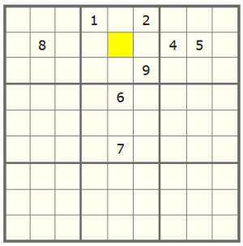

Technique: Naked Single
Sudoku Solving Techniques
Naked Single
This is another very basic technique for solving Sudoku puzzles. While considering what digits from 1 to 9 are possibly placed in an empty cell, one would first find out what digits have appeared in the common row, column and the 3x3 box with this cell. If eight out of nine digits have been used, then the other one digit left must be in this cell.
Consider the following partial Sudoku puzzle:

The yellow cell must be a 3. Why? The other 8 digits have been used (digits 4, 5 and 8 in the common row, digits 6 and 7 in the common column and digits 1, 2 and 9 in the common 3x3 box). Therefore the digit 3 is the only possibility for this cell.